Domínio
Uma equipa mantém premido o botão do dispositivo durante uns segundos para o capturar e pontua a cada intervalo enquanto o tiver. A outra equipa pode roubá-lo a qualquer momento.
Pré-alfa · software das fases 1 e 2 pronto, placas a sério já jogam jogos inteiros com o controlador de campo na bancada, fase 3 pronta em software, fases 4 e 5 feitas em software · ainda não pronta para o campo
A Atalaia é uma plataforma aberta para os dispositivos eletrónicos de jogo (os props) de airsoft, paintball e milsim: as caixas que as equipas capturam, as bombas que armam e desarmam. Monta uma caixa de domínio com um microcontrolador de 20 € (uma pequena placa de computador, barata), transforma um telemóvel Android antigo num terminal de hacking, organiza um milsim de fim de semana com 20 caixas numa rede mesh LoRa (rádio de longo alcance e baixo consumo, em que as caixas passam as mensagens umas às outras de um lado ao outro do campo) e escreve os teus próprios modos de jogo em pequenos scripts. Tudo corre no próprio campo: não precisa de nuvem nem de internet, e não te prende a nenhum fabricante.
Atalaia: torre de vigia no alto de um monte, de onde se via o perigo a chegar e se passava o aviso. Porquê este nome?
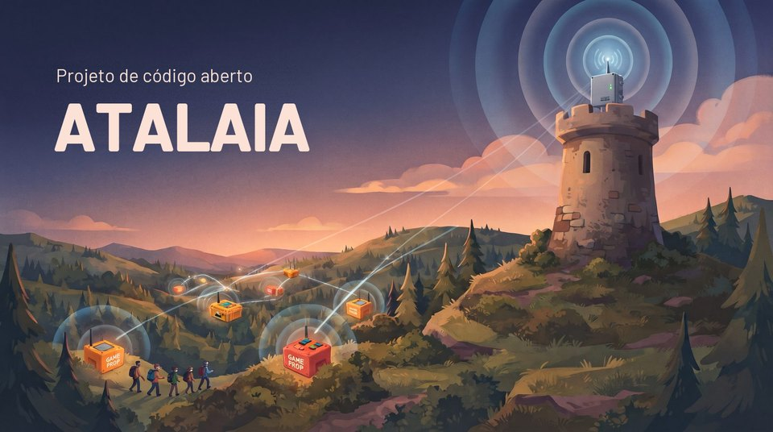
Para jogar não é preciso perceber nada de eletrónica. É assim que um jogo vai correr quando as caixas estiverem construídas (fases 1 e 2); o simulador já hoje joga os mesmos modos num computador.
A organização espalha as caixas pelo campo e escolhe um modo de jogo, como o Domínio, no teclado de uma caixa ou num telemóvel, em menos de um minuto.
Para tomar uma caixa, a equipa mantém premido o botão da sua cor durante uns segundos. A caixa acende-se com essa cor e pontua para a equipa até a outra a roubar.
Cada caixa avisa por rádio o controlador de campo, um pequeno computador na base; as caixas mais afastadas passam a mensagem pelas que estão no meio. Uma caixa que perca a ligação continua a jogar e põe-se em dia mais tarde.
O controlador faz as contas. A organização acompanha o jogo ao vivo no telemóvel, e o campo pode mostrar o marcador num ecrã grande ou numa transmissão em direto.
Os dispositivos eletrónicos dão outra vida a um jogo, mas os sistemas comerciais guardam as regras num firmware fechado. Os modos novos ficam à espera do fabricante, não há API pública e não dá para juntar hardware próprio. A Atalaia faz diferente.
Todos os jogos correm no próprio campo, totalmente offline, numa casa ou numa mata com vários quilómetros. A internet é opcional.
Placas ESP32 baratas, computadores Raspberry Pi do tamanho de um cartão de crédito, placas simples tipo Arduino e telemóveis Android, novos ou reaproveitados, têm todos lugar no mesmo jogo. O software das caixas ESP32, do controlador de campo e dos telemóveis Android já está escrito; as placas tipo Arduino chegam mais tarde.
Os modos de jogo são pequenos scripts Lua, ficheiros de texto com as regras, mais um ficheiro de definições: fáceis de ler, mudar e partilhar, e nenhum modo precisa de código próprio no software que vem dentro das caixas. Por agora as caixas trazem os modos já incluídos; enviar um modo novo sem voltar a gravar esse software ainda está por fazer.
Os dispositivos falam entre si pelo Skirmesh-RF, um protocolo de rádio documentado, por isso qualquer pessoa pode construir um aparelho que entre no jogo. O controlador de campo disponibiliza APIs MQTT, REST e WebSocket para marcadores, transmissões em direto e outras ferramentas.
Funções de jogador, squads, check-in no campo com um cartaz impresso e um registo de cronografagem que guarda as medições assinadas de cada réplica para verificações aleatórias já estão feitos em software; os cenários personalizados chegam na fase 4.
Campos que cobram entrada e makers que vendem caixas são bem-vindos. Quem distribuir ou alojar uma versão alterada tem de partilhar as alterações.
Em poucas palavras: os dispositivos no campo falam por rádio com o controlador de campo, um pequeno computador na base que corre o jogo e guarda a pontuação. Os telemóveis ligam-se a ele por Wi-Fi, e os marcadores, as transmissões em direto e as apps de mapas, como o ATAK, pela sua API. Um servidor do site, opcional e na internet, guarda as contas e o histórico. O controlador, a sua API e a consola da organização já estão feitos e testados num computador, ainda não no campo; do servidor do site só existem, por agora, o esqueleto e as contas (entrada com códigos de dois fatores e funções por campo; ainda sem dados de jogos).
Por dentro, todos os aparelhos que correm modos de jogo usam o mesmo núcleo partilhado, escrito em C11, e os mesmos modos em Lua; só muda uma camada fina para cada tipo de hardware. Um modo escrito uma vez joga-se da mesma maneira numa caixa, num telemóvel ou num Raspberry Pi.
Os dispositivos falam por LoRa, um rádio de longo alcance e baixo consumo, no protocolo próprio da Atalaia, o Skirmesh-RF. Dois diagramas mostram o que o LoRa consegue e não consegue fazer num campo, e como um só protocolo corre em aparelhos muito diferentes. Nada disto passou ainda por um campo a sério.
Os modos reagem à intenção («uma equipa está a capturar este dispositivo») e não ao hardware, por isso o mesmo script corre numa Field Box, numa caixa com teclado ou num telemóvel Android. Há onze modos, um modificador e as Ligaduras já escritos e testados em software; ainda nenhum correu num campo a sério.
Uma equipa mantém premido o botão do dispositivo durante uns segundos para o capturar e pontua a cada intervalo enquanto o tiver. A outra equipa pode roubá-lo a qualquer momento.
Os atacantes armam a bomba e depois defendem-na; os defensores têm de a desarmar antes do fim da contagem. Arma-se e desarma-se a manter um botão premido, ou com um código de teclado para cada equipa.
Cada participante leva uma etiqueta NFC assinada. Uma equipa lê numa estação as etiquetas que recolheu: a de alguém da equipa adversária confirma a baixa, a de alguém da própria equipa nega-a. Etiquetas falsificadas são recusadas.
Oito capturas do firmware real da Field Box (ESP32, LVGL 9.2, ecrã de 320 × 240) a correr no emulador Wokwi. A interface da caixa está em inglês. O firmware já corre numa Heltec V4.3 a sério; as capturas são do emulador. Toca ou clica numa captura para a ver em grande.
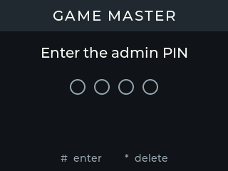
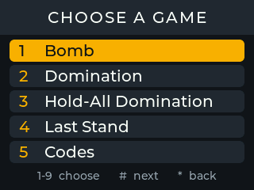
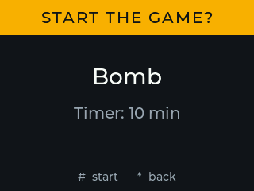
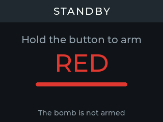
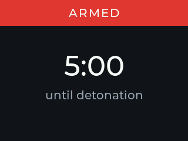
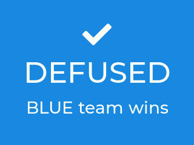
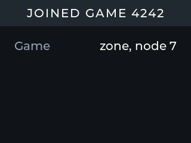
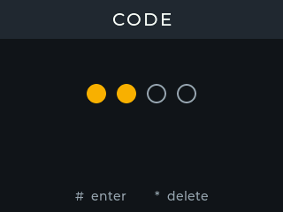
O manual de montagem tem o esquema de ligações completo e o guia da primeira gravação do firmware, para a Heltec WiFi LoRa 32 V4.
Os ecrãs da própria app estão em português, inglês, alemão e chinês tradicional, e ela desenha os ecrãs de cada modo a partir dos mesmos ficheiros YAML da Field Box. Estas são as imagens dos testes da app, não fotografias de um telemóvel: a app já correu em emuladores Android, mas ainda não num telemóvel a sério.
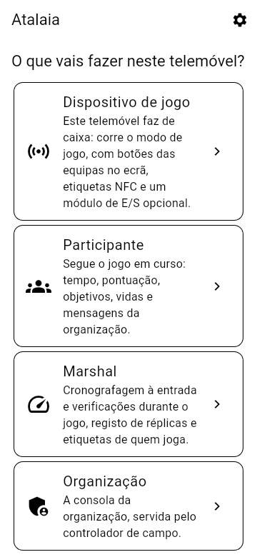
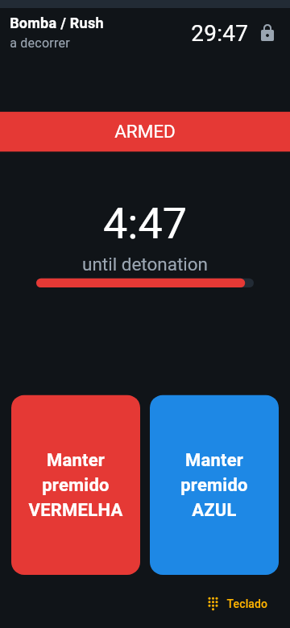
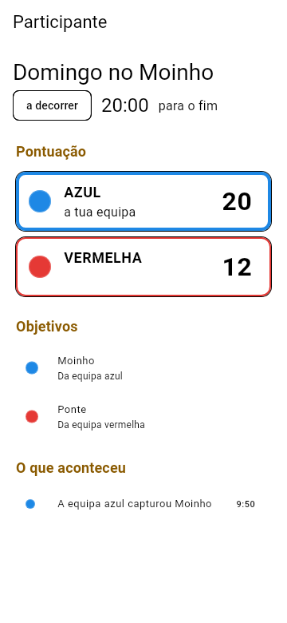
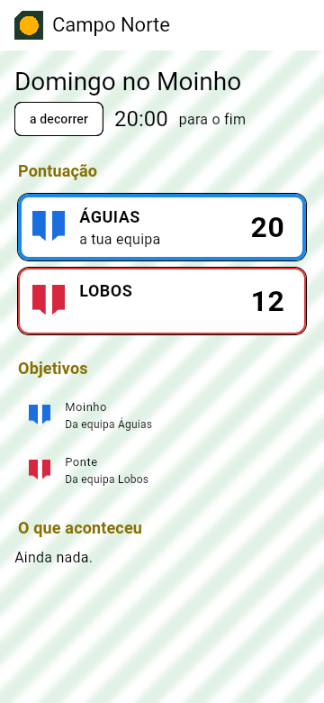
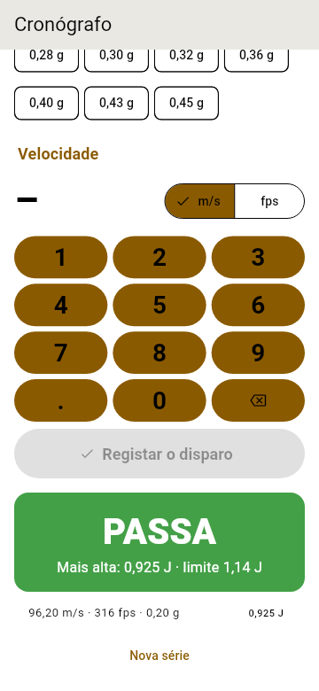
As Ligaduras desenham os seus ecrãs a partir dos mesmos ficheiros YAML numa Field Box e num dispositivo Android, em português, a não ser que a organização escolha o inglês, o alemão ou o chinês. Aqui, tal como a app os desenha:
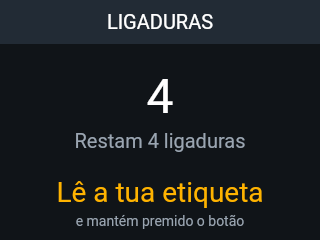
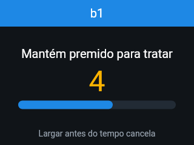
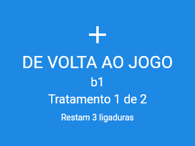
Não precisas de hardware: o núcleo partilhado já corre num computador. O simulador joga um modo no browser: mantém premidos os botões das equipas, vê o ecrã de cada dispositivo e acompanha o registo de eventos. Os comandos abaixo escrevem-se num terminal.
cmake -S core -B build -DATALAIA_SHARED=ON
cmake --build build
cd simulator
python -m atalaia_sim serve ../modes/bombcd simulator
python ../tools/docker_sim.py serve ../modes/bombDepois abre http://localhost:8000. Precisas de Python 3.10 ou mais recente, com PyYAML. O guia do simulador (em inglês) explica todas as opções.
O firmware da Field Box, do modem de rádio USB e do módulo de E/S já está escrito, e os três correm em testes num computador. O da Field Box e o do modem já correm em Heltec V4.3 a sério, na bancada: uma caixa entra nos jogos do controlador de campo pelo rádio, através de uma segunda placa como modem, joga-os até ao fim e recebe atualizações de firmware pelo ar, com o pequeno ecrã da placa a mostrar o jogo; o do módulo ainda não correu numa placa. Para experimentar numa placa sem caixa, há uma versão de bancada do firmware (teclas pelo cabo USB). Para montar uma caixa e gravar o firmware, segue o manual de montagem (em inglês); o guia do firmware (em inglês) explica também como compilar o do modem e o do módulo.
Compila o APK de testes (debug) da app com o Docker e instala-o num telemóvel com Android 8.0 ou mais recente, ou no emulador Android, como explica o guia da app (em inglês). Já correu em emuladores, mas ainda não num telemóvel a sério.
Manuais para quem usa a Atalaia, não para quem programa: para quem joga, a organização, os marshals, quem opera as caixas e quem as monta, em português e em inglês, com um início rápido de uma página. Dizem o que o software mostra hoje e marcam o que ainda não foi experimentado num campo.
Seis fases, cada uma fechada por um teste a sério no campo: a sua prova. O software vai à frente do hardware: as fases 1 a 3 estão prontas em software (placas a sério já jogam jogos inteiros na bancada e a app para iOS já passou a sua lista de verificação num iPhone); as fases 4 e 5 estão feitas em software. As provas esperam por caixas montadas, testes no campo, um servidor a sério e a chave do registo do projeto.
Núcleo partilhado, sandbox Lua, codec Skirmesh-RF e simulador no browser. Prova superada.
Firmware da Field Box e manual de montagem; na bancada, uma placa a sério joga jogos inteiros. À espera da primeira caixa montada.
Skirmesh-RF sobre LoRa, controlador de campo, API, consola da organização e um pacote de modos, testados em software; na bancada, placas a sério jogam jogos inteiros com o controlador pelo rádio. À espera de 5 caixas montadas num campo.
Dispositivos Android, módulo de E/S, app para quem joga e os modos que precisam dos telemóveis: feito em software, incluindo o iOS (verificado num iPhone). O teste no campo espera por telemóveis e módulos a sério.
Servidor do site, marcação de jogos e inscrições, cenários personalizados, modos avançados, ATAK. Todos os passos de software estão feitos; faltam um servidor a sério, uma revisão jurídica e os testes em hardware.
Editor visual de modos, pacotes de modos assinados, o registo de modos como modelo, alemão e chinês tradicional, guias de montagem. Todos os passos de software estão feitos.
O roadmap completo, com o que cada fase inclui e a sua prova →
É aqui que se vão encontrar campos, equipas e quem constrói o seu próprio material. Tudo é opcional: o espaço guarda só o que cada um decide publicar, e os dados de jogo ficam nos servidores de cada campo.
Perguntas, ideias, comentários à especificação e relatos de eventos. Ir para as Discussions
Fotografias, listas de material, ficheiros dos invólucros e esquemas de ligações de cada montagem, a começar pelos primeiros protótipos da Field Box.
Uma lista, só para quem se quiser inscrever, dos campos e equipas que usam a Atalaia, com a região, o tipo de espaço e um contacto.
O registo de modos já existe, ainda sem modos: sê a primeira pessoa a partilhar um. Um catálogo com descrições e avaliações da comunidade vem depois.
Totais anónimos de versões, plataformas e modos jogados, só para quem aderir. Desligadas por omissão.
Para clubes sem apoio informático, a preço de custo, com os dados de cada clube separados e exportáveis.
A Atalaia é feita por jogadores, donos de campos e makers. Já hoje podes ajudar:
Cada commit leva uma linha Signed-off-by, e o projeto é rigorosamente clean room, feito de raiz: nenhum código, firmware, manual, som ou imagem de qualquer produto comercial.
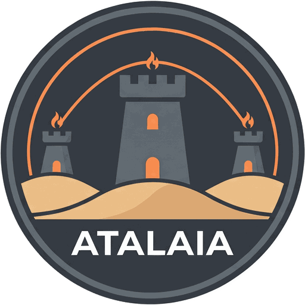
Uma atalaia é uma torre de vigia: um posto de observação no alto de um monte ou à beira-mar, de onde se vigiava o horizonte e se passava o aviso. A palavra chegou ao português vinda do árabe aṭ-ṭalāʾiʿ, «os batedores», e ainda hoje se diz que alguém está de atalaia quando está atento ao que aí vem. Há atalaias espalhadas pela costa e pelo interior do país, e várias terras com o nome.
Um controlador de campo vê todos os dispositivos em jogo e avisa a organização mal alguma coisa muda. As atalaias também não dependiam de ninguém: trabalhavam com o que tinham à vista. E foram a primeira rede mesh de pouca largura de banda: fumo de dia, fogo à noite, passados de torre em torre. O Skirmesh-RF segue as mesmas regras, com LoRa.
Os dispositivos da Atalaia são equipamento de jogo, e devem parecê-lo: cores vivas, etiquetas bem visíveis a dizer «EQUIPAMENTO DE JOGO» ou «GAME PROP», e nada que se pareça com um engenho explosivo verdadeiro. Transporta-os em malas identificadas, nunca os deixes sem vigilância fora do campo e trata as baterias de lítio com cuidado.